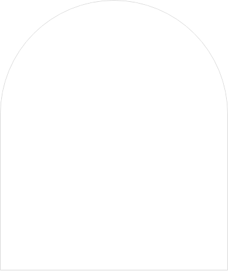
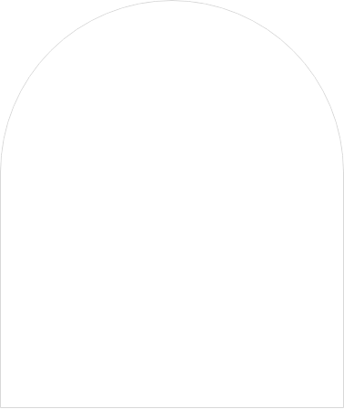
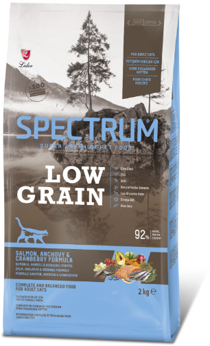
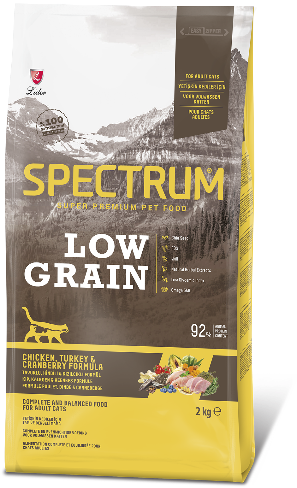

MÜKEMMEL BESLENME
ONLARIN DOĞASINDA VAR
ONLARIN DOĞASINDA VAR
 

Mini ve Küçük ırk Yavru Köpekler için
Kuzulu & Yaban Mersinli Formüllü
Kuzulu & Yaban Mersinli Formüllü

Yetişkin Kediler için
Somonlu, Hamsili & Kızılcıklı Formüllü
Somonlu, Hamsili & Kızılcıklı Formüllü

Yetişkin Kediler için
Tavuklu, Hindili & Kızılcıklı Formüllü
Tavuklu, Hindili & Kızılcıklı Formüllü
Kedi Sahibi Olmanın Yolları
Kedi ve Köpek Mamaları
Mama Değişimi Nasıl Yapılmalıdır?